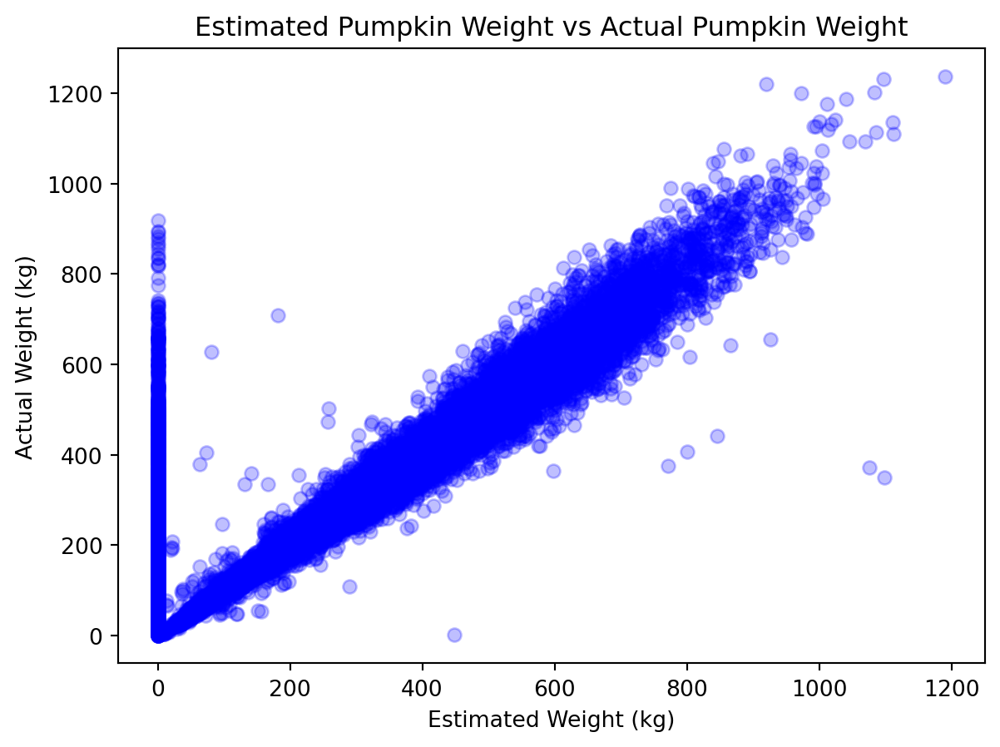
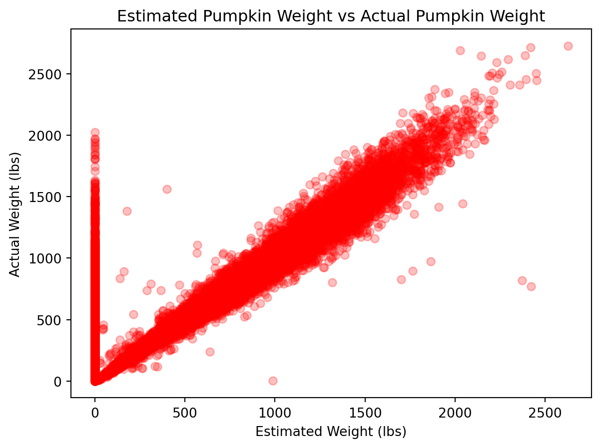
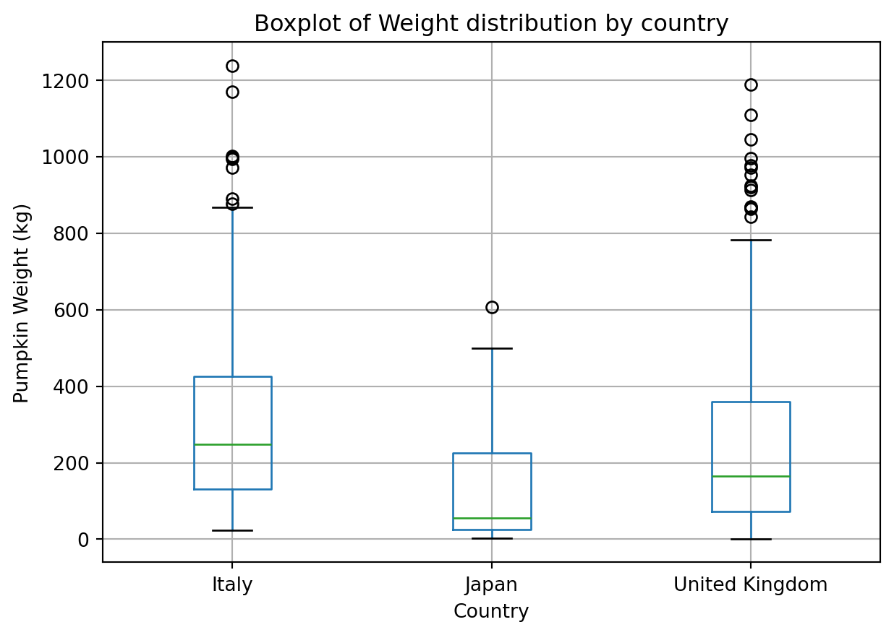
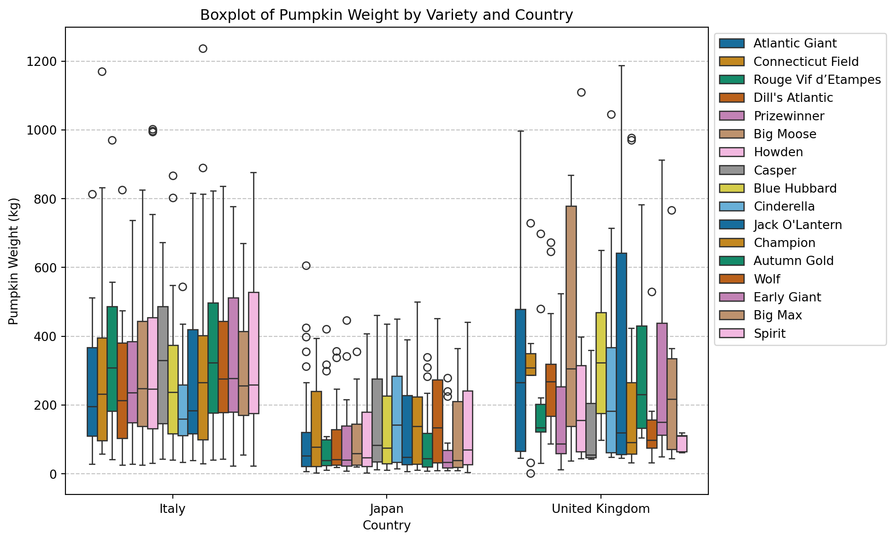

This document contains all the results from and code used to complete the ‘Pumpkins’ portion of the LIFE4138 Coursework.
Task 1 - Read in the dataset 🔍
The first task involved reading in the pumpkins.csv file. To do this the following import_dataset function was made.
Code
import pandas as pddef import_dataset(path :str): ''' Function to import a csv dataset from its filepath or url Checks to see if Arguments: path: Takes a string of a url or filepath of a csv file to import. Returns: dataset - returns a pandas dataframe '''if path.lower().endswith('.csv') ==False: #Error if not .csv fileprint("File is not a csv file")returnNonetry: dataset = pd.read_csv(path) #Imports the datasetprint('Dataset imported successfully!')return datasetexceptFileNotFoundError: #Error if file doesnt existprint("File not found, please enter a valid path")except pd.errors.EmptyDataError: #Error if file emptyprint("The provided file is empty.")except pd.errors.ParserError: #Error if not in csv format insideprint("Please check if this in .csv format")returnNone
This could then be called using the filepath of the .csv file. It is assigned here to the variable pumpkins for ease of use later.
Next was to identify the heaviest pumpkin and data about it including: weight, variety, where it was from and when it was grown.
To do this the find_highest function was created to get the row with a highest value in a specific column.
The code for this function can be seen here:
def find_highest(dataframe: pd.DataFrame,column: str):''' Function to get the row information of the highest value in a column Arguments: dataframe: the dataframe to search through column: the column to search through for the highest value '''if (isinstance(dataframe, pd.DataFrame)) ==False:print(f"First argument must be a pandas dataframe")returnNonetry: highest_row = dataframe.loc[dataframe[column].idxmax()]return highest_rowexceptKeyError:print(f"{column} does not exist in the dataframe")exceptNameError:print('Please provide a valid variable')exceptAttributeError:print('Please enter a valid argument type')returnNone
This function was called and we can see general information about the pumpkin below.
heaviest_pumpkin = find_highest(pumpkins,'weight_lbs')print(f"The heaviest pumpkin was a {heaviest_pumpkin['variety']} from {heaviest_pumpkin['city']}, {heaviest_pumpkin['state_prov']}, {heaviest_pumpkin['country']}.\nIt weighed {round(heaviest_pumpkin['weight_lbs'],2)}lbs and was grown in the year {heaviest_pumpkin['id'].removesuffix('-P')}.")
The heaviest pumpkin was a Champion from Terricciola, Tuscany, Italy.
It weighed 2727.22lbs and was grown in the year 2021.
Task 3 - Conversion and Creation 📏
Converting pounds to kilograms
The function lbs_to_kg was created to convert a value in lbs to kg, allowing it to be applied on mass in the next part.
def lbs_to_kg(value: float|int) ->float:''' Function to convert a value in lbs to kg Takes a column input of values in lbs Arguments: value: a value to be converted Returns: new value as a float '''try:return ((float(value))/2.20462) #return converted valueexceptValueError: #Error if not a numberprint("Please enter a valid number")returnNoneexceptTypeError: #Error if no value providedprint("Please pass a number into the function")returnNone
We can test this works using known values of lbs and kgs. For example, 2.20462 lbs is equal to 1kg and running the function should return 1.0.
lbs_to_kg(2.20462)
1.0
Creating a new column
Now that this function is verified to work it can be used to create new column of weight in kilograms.
The following line of code was ran that created a new column and called the previously created function
pumpkins[f"weight_in_kg"] = [(lbs_to_kg(i)) for i in pumpkins['weight_lbs']] #Creates new column using values by calling conversion function in list
Now we can take a look at the new column in the dataset:
print(pumpkins.head(1))
id place weight_lbs grower_name city state_prov country \
0 2018-P 594 1019.99016 Wolf, Andy Olympia Washington United States
gpc_site seed_mother pollinator_father \
0 Baumans Farm Giant Pumpkin Weigh-off 1702 Sherwood Self
ott est_weight pct_chart variety dataset_id weight_in_kg
0 367.117268 1204.293958 0.0 Wolf 2 462.660304
We can re-run the code from earlier on the new column to find the value in kg for the heaviest pumpkin
heaviest_pumpkin = find_highest(pumpkins,'weight_in_kg')print(f"The heaviest pumpkin was a {heaviest_pumpkin['variety']} from {heaviest_pumpkin['city']}, {heaviest_pumpkin['state_prov']}, {heaviest_pumpkin['country']}.\nIt weighed {round(heaviest_pumpkin['weight_in_kg'],2)}kg and was grown in the year {heaviest_pumpkin['id'].removesuffix('-P')}.")
The heaviest pumpkin was a Champion from Terricciola, Tuscany, Italy.
It weighed 1237.05kg and was grown in the year 2021.
Task 4 - Weight class 🏋🏼♂️
This task required creating another new column, with three classes of weight: light, medium and heavy.
The thresholds decided for these were as follows:
Threshold
Weight (kg)
light
<250
medium
250-500
heavy
>500
This column was created using the following code.
classes = []for i in pumpkins['weight_in_kg']:if i<250: #Light weight class if weight <250 classes.append('light')elif i<500: #Medium weight class if weight >250 but <500 classes.append('medium')else:#Heavy weight class if weight >500 classes.append('heavy')pumpkins["weight_class"] = classes #Create new column from classes list
We can see the weight_class values for the first three rows below
weight_in_kg weight_class
0 462.660304 medium
1 610.834010 heavy
2 639.005502 heavy
Task 5 - Estimated vs Actual Weight plotting 📈
Standardising Units
Next was to create a plot of the estimated weight of the pumpkins against the actual weights.
This can be done in a number of ways but the important thing to note is that both axis require the same units. One could plot the est_weight against the weight in lbs using the data already available in the dataset, but to make use of the function created in task 3, the values were plotted in kilograms.
A new column in the dataset was created called est_weight_kg using the code below.
pumpkins[f"est_weight_kg"] = [(lbs_to_kg(i)) for i in pumpkins['est_weight']]
This new set column of data (est_weight_kg) can be plotted against the weight_in_kg column to see the relationship.
Creating the graph
The module matplotlib is used to create graphs and is imported.
import matplotlib.pyplot as plt
Next a plot of the two columns can be created.
Note: The plt.figure command was used here as it makes my later comparison easier to deal with.
figure_1 = plt.figure() #Creates a new figure to draw graph onplot_area_1 = figure_1.add_subplot() #Creates a new plotting area inside figure_1 to make axesplot_area_1.scatter(x = pumpkins['est_weight_kg'],y = pumpkins['weight_in_kg'],alpha =0.25, color ='blue') #Creating the relationship graphplot_area_1.set_title('Estimated Pumpkin Weight vs Actual Pumpkin Weight') #Adding title and axis labelsplot_area_1.set_xlabel('Estimated Weight (kg)') #Adding x axis labelplot_area_1.set_ylabel('Actual Weight (kg)');#Adding y axis label#figure_1.show() - This line is commented as it does not function corectly in markdown

Figure 1: A Scatterplot of the relationship between the estimated weight and the actual weight of pumpkins from the pumpkin competitions dataset.
The pattern observed should be the same as if the estimated and actual weight values were plotted in lbs, which can be seen below.
Code
figure_2 = plt.figure() #Creates a second figure to draw graph onplot_area_2 = figure_2.add_subplot() #Creates a new plotting area inside figure_2 to make axesplot_area_2.scatter(x = pumpkins['est_weight'],y = pumpkins['weight_lbs'],alpha =0.25, color ='red') #Creating the graph in lbs for checkingplot_area_2.set_title('Estimated Pumpkin Weight vs Actual Pumpkin Weight') #Adding titleplot_area_2.set_xlabel('Estimated Weight (lbs)') #Adding x axis labelplot_area_2.set_ylabel('Actual Weight (lbs)');#Adding y axis label#figure_2.show() - This line is commented as it does not function corectly in markdown

As can be seen above, the two graphs have identical patterns, meaning there were no issues when converting to kilograms.
Saving the graph
Next we can save this graph as a file by running:
figure_1.savefig("pumpkins_weight_relationship.png", dpi =300) #Saves the first figure to disk. Increased DPI to improve readability.
What does the scatterplot show?
As seen in Figure 1 there is a strong positive relationship between the estimated and actual weight.
There are many outliers such as the large cluster at Estimated Weight = 0, this is most likely due to there not being an estimated weight value for these entries.
As the estimated weight increases beyond ~800kg, the spread of the points show that weight was less reliably estimated.
Task 6 - Selecting three countries 🇬🇧 🇯🇵 🇮🇹
The three countries chosen for this exercise were the United Kingdom, Japan and Italy.
Filtering the data
Firstly, a subset of the dataset was created by checking if the country value was in a predefined list.
filter_vars = [country in ['United Kingdom', 'Japan', 'Italy'] for country in pumpkins['country']] #Checks if country in list, creates list of true and false valuesfiltered_pumpkins = pumpkins[filter_vars] #Creates list by adding the row if filter_vars returns True
Saving the filtered data
The filtered data can be easily saved to disk using:
filtered_pumpkins.to_csv('pumpkins_filtered.csv')
Task 7 - Summarising the filtered data 🧮
Next was to summarise the filtered data, with two key tasks. Finding the mean weight per country and finding the mean weight for each variety per country. This exercise was done using the previously calculated kilogram values.
Finding mean weight per country
This was done by grouping the filtered_pumpkins dataframe by country and then selecting the weight_in_kg column and calculating the mean. The mean values for each country can be seen below.
print(filtered_pumpkins.groupby('country')['weight_in_kg'].mean()) #Groups by country and #filters to only weight and calculates mean
country
Italy 299.185183
Japan 127.671880
United Kingdom 283.556755
Name: weight_in_kg, dtype: float64
Finding mean weight per variety per country
mean_variety_country = filtered_pumpkins.groupby(['country','variety'])['weight_in_kg'].mean()print(mean_variety_country) #Groups by country and calculates mean value and then prints
country variety
Italy Atlantic Giant 242.154285
Autumn Gold 352.159033
Big Max 305.008076
Big Moose 307.262306
Blue Hubbard 265.696827
Casper 330.515216
Champion 321.436849
Cinderella 202.673349
Connecticut Field 296.793522
Dill's Atlantic 250.336149
Early Giant 351.145476
Howden 330.689707
Jack O'Lantern 278.962223
Prizewinner 274.417204
Rouge Vif d’Etampes 340.631514
Spirit 335.682360
Wolf 315.556185
Japan Atlantic Giant 122.073733
Autumn Gold 91.298726
Big Max 118.115229
Big Moose 106.603392
Blue Hubbard 140.898838
Casper 159.821115
Champion 158.154546
Cinderella 168.969278
Connecticut Field 137.878056
Dill's Atlantic 103.823966
Early Giant 69.803873
Howden 119.936992
Jack O'Lantern 128.210147
Prizewinner 109.344945
Rouge Vif d’Etampes 105.564403
Spirit 146.281759
Wolf 164.148739
United Kingdom Atlantic Giant 369.179397
Autumn Gold 331.133233
Big Max 247.166956
Big Moose 414.692102
Blue Hubbard 349.170387
Casper 137.601717
Champion 265.338280
Cinderella 319.470761
Connecticut Field 303.526042
Dill's Atlantic 297.929338
Early Giant 316.615963
Howden 283.027751
Jack O'Lantern 367.719713
Prizewinner 187.673603
Rouge Vif d’Etampes 214.051226
Spirit 93.507233
Wolf 140.682344
Name: weight_in_kg, dtype: float64
Next to get the lowest mean weight variety we can do:
lowest_mean_row = mean_variety_country.idxmin() #Gets lowest row (country, variety)lowest_mean_value = mean_variety_country.min() #Gets lowest mean weight valueprint(f"The lowest mean weight was '{lowest_mean_row[1]}' from {lowest_mean_row[0]}, weighing {round(lowest_mean_value,2)}kg.")
The lowest mean weight was 'Early Giant' from Japan, weighing 69.8kg.
Task 8 - Weight Distribution Boxplot 📊
Creating a boxplot
figure_3 = plt.figure() #Creates a new figureplot_area_3 = figure_3.add_subplot() #Creates new plotting area in figurefiltered_pumpkins.boxplot(column ='weight_in_kg', by ='country', ax = plot_area_3)plt.suptitle("") #Removes pandas title so I can add my ownplot_area_3.set_title("Boxplot of Weight distribution by country")plot_area_3.set_xlabel('Country')plot_area_3.set_ylabel('Pumpkin Weight (kg)');

Figure 2: A boxplot showing the distribution of pumpkin weight of three countries from the filtered pumpkin competitions dataset.
Saving the boxplot
This boxplot can now be saved by running:
figure_3.savefig("filtered_boxplot.png", dpi =300) #Saves the third figure (boxplot) to disk. Increased dpi to improve readability.
What does the boxplot show?
In Figure 2 the distribution of pumpkin weight in kg of the three countries (United Kingdom, Japan and Italy) can be seen.
Looking at the three boxes, it is seen that Italy produced the heighest overall weighted pumpkins, as its median is higher than both Japan and the United Kingdom. Italy also has a large number of outliers
Japan produces the lowest weighted pumpkins as its median is below both of the other countries. It also has the lowest interquartile range of the countries, showing low variability. Japan also has the least number of outliers.
The United Kingdom produces pumpkins weighted in between the other countries based on its median value. It has a similar number of outliers to Italy but at lower weights.
Task 9 - Facet Plot 📉
Creating the facet plot
To create a facet plot from the plot in Task 8, the seaborn module was imported and used.
import seaborn as sns
Next a facet plot can be made using seaborn as follows:
figure_4 = plt.figure(figsize = (10,6), constrained_layout =True) #Creates new figure to draw on with bigger size and tight spacingplot_area_4 = figure_4.add_subplot() #Creates subplot to plot onfacetplot = sns.boxplot( #have to use catplot as boxplot has no facetting data = filtered_pumpkins, #Chooses filtered dataset x ='country', #Chooses axis for data y ='weight_in_kg', #Chooses axis for data hue ='variety', #Creates coloured subplots based on variety ax = plot_area_4, #Masks to created matplot figure palette ='colorblind'#Changes palette to be *colourblind friendly*)plot_area_4.set_xlabel('Country') #Add axis labels and titleplot_area_4.set_ylabel('Pumpkin Weight (kg)')plot_area_4.set_title('Boxplot of Pumpkin Weight by Variety and Country')plot_area_4.grid(True, linestyle ='--',alpha =0.75, axis ='y') #Adds gridlines only on y axisplot_area_4.legend(bbox_to_anchor=(1,1)) #Moves legend to the side

Figure 3: A boxplot showing distribution of pumpkin weight by variety and country from the filtered pumpkin competitions dataset.
Saving the plot
This facet boxplot can now be saved by running:
figure_4.savefig("filtered_facet_boxplot.png",bbox_inches='tight', dpi =300) #Saves the third figure (boxplot) to disk. Increased dpi to improve readability.#bbox_inches reduces whitespace making it easier to read
What does the facet boxplot show?
Figure 3 shows a similar pattern to Figure 2, but with greater breakdown of the varieties contributing to the patterns observed previously. It still shows a similar pattern of Japan being, generally, the lowest median weight for pumpkins, followed by the United Kingdom and Italy.